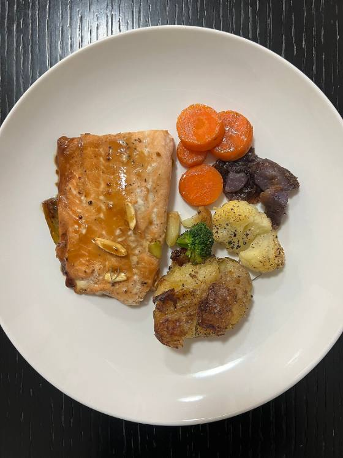

Voy a cocinarla
Cena · 25 min · 1 porción
Salmón al horno con papa y ensalada
620
kcal
Calorías
46
g
Proteína
40
g
Carbohidratos
30
g
Grasa
Ingredientes
5
Salmón
180 g
Papa
2 pza
Lechuga
2 tazas
Jitomate
1 pza
Aceite de oliva
1 cda
◈
El omega 3 del salmón es el mismo que compras en cápsula.
Una vez por semana en el plato
ahorra suplemento.
Registrar hoy
A la compra
Preparación
4 pasos
1
Hornea el salmón
15 min a 200 °C
, con la piel hacia abajo.
2
Cuece las papas en cubos aparte.
3
Arma la ensalada mientras se hornea.
4
El salmón está listo cuando
se separa en láminas con el tenedor
, no antes.